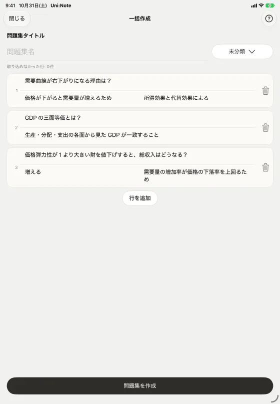
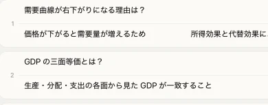

手書きで問題をつくる
Apple Pencilで、問題と答えを手書きする。数式や図も、書いたまま問題になる。


貼り付け・ファイルからまとめて作成
問題・解答・解説を並べたテキストを貼り付けるか、ファイルから読み込んで、まとめて問題にする。
一括作成はPremium／Premium Plusで利用できます。


AIでノートから問題集を生成
ノートのページを選ぶと、AIが内容から問題を生成する。生成された問題を確認してから、問題集に加える。
AI残量を使用します。